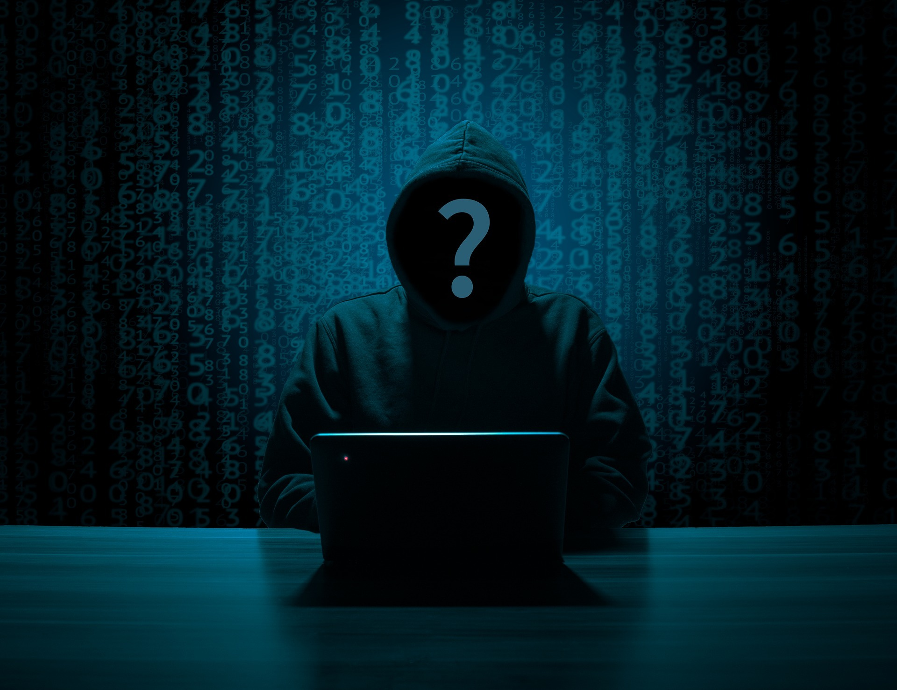

In de digitale wereld zijn er veel soorten aanvallers en verdedigers. Die spelen een kat- en muisspel: de verdedigers ontwikkelen steeds betere manieren van beveiliging, aanvallers verzinnen steeds nieuwe manieren om die te doorbreken.
Wie zijn de aanvallers en de verdedigers? De aanvallers noemen we al snel hackers. Maar dat is een verwarrende term. Want is een hacker hetzelfde als een internetcrimineel? Nee, er zijn ook hackers met goede bedoelingen. Die hackers zijn geen aanvallers, maar helpen juist om de verdediging te verbeteren. En er zijn ook overheden die hacken om terroristen op te sporen.
In dit hoofdstuk kijken we naar wat computercriminaliteit precies is. Daarna kijken we wat voor soorten aanvallers en verdedigers er zijn.
Computercriminaliteit
Computercriminaliteit betekent slechte dingen doen met computers. Er zijn drie soorten: diefstal, fraude en afpersing. Diefstal kan gebeuren als iemand je computer hackt of toegang krijgt tot een plek waar jouw gegevens staan. Bij fraude proberen slechte mensen je voor de gek te houden om geld van je te krijgen, zoals bij phishing of neprelaties online. Afpersing is wanneer criminelen dreigen je gegevens bekend te maken of valse dingen te zeggen, en dan proberen ze geld van je te krijgen. Het is belangrijk om voorzorgsmaatregelen te nemen, en als er iets ergs gebeurt, moet je het aan de politie vertellen.
Computervredebreuk
Hacken, ook wel computervredebreuk genoemd, is niet toegestaan en wordt bestraft volgens de wet. Het betekent ongeoorloofd binnendringen in een computersysteem, of je dat nu doet door slimme trucjes of door iemands wachtwoord te stelen. Zelfs als je probeert in te loggen met iemands wachtwoord maar het lukt niet, is dat al verboden. Het hebben van tools om te hacken is ook niet toegestaan. Zelfs als een website slecht beveiligd is, mag je niet proberen in te breken. Als je een zwakke plek in de beveiliging ontdekt, kun je dat wel melden. Naast het inbreken zelf, is het kopiëren, verwijderen of veranderen van gegevens na de inbraak ook strafbaar.
Ethisch hacken
Niet alle hackers zijn slecht. Er zijn ook 'goede' hackers, die ethische hackers worden genoemd. Ze helpen bedrijven door hen te vertellen over zwakke plekken in hun computersystemen, zodat die plekken kunnen worden gerepareerd. Ze doen dit om het internet veiliger te maken. Soms krijgen ze zelfs beloningen voor hun hulp.
Ethische hackers melden de zwakke plekken eerst aan het bedrijf. Als het bedrijf niet snel genoeg reageert, kunnen ze ervoor kiezen om het probleem openbaar te maken, zodat anderen op de hoogte worden gebracht en voorzichtig kunnen zijn. Hoewel ethische hackers de wet overtreden door in te breken, worden ze meestal niet gestraft omdat ze helpen om het internet beter te beschermen.
Het delen van informatie over gevaarlijke beveiligingsproblemen wordt beschermd door persvrijheid. Dit betekent dat ethische hackers niet worden vervolgd omdat ze bijdragen aan het blootleggen van belangrijke problemen. Er zijn echter regels die ze moeten volgen om problemen te voorkomen, zoals alleen hacken als er geen andere manier is om een ernstig probleem aan te tonen, en niet onnodig gegevens stelen of computers hacken.
Spionage en oorlogsvoering
Een zero day is een soort computergeheim dat nog niet is ontdekt. Het is als een digitaal wapen en wordt voor veel geld verkocht, soms wel tienduizenden of honderdduizenden euro's. Criminelen gebruiken zero days om schade aan te richten, terwijl beveiligingsbedrijven ze kopen om computerproblemen op te lossen en mensen te beschermen.
Ook overheden zijn geïnteresseerd in zero days. Ze gebruiken ze om stiekem informatie te verzamelen of om systemen van vijanden te verstoren. Het gebruik van zero days is niet altijd goed, omdat het kwetsbaarheden in computers in stand houdt en het internet onveiliger maakt. Sommige landen, zoals Nederland, hebben strenge regels over hoe de overheid zero days mag gebruiken.
